Texturas entregues; prévia local, não captura do jogo.
| Família | Casca | Corte | Descascado | Tábuas |
|---|---|---|---|---|
| ancient | 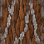 | 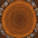 | 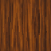 | 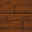 |
| araucaria | 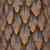 | 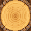 | 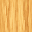 | 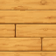 |
| aspen | 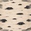 | 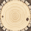 | 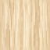 | 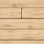 |
| baobab | 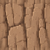 | 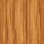 | 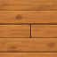 | |
| birch | 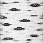 | 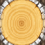 | 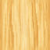 | 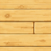 |
| blue_enchanted | 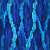 | 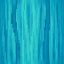 | 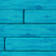 | |
| blue_spruce | 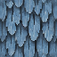 | 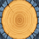 | 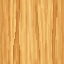 | 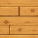 |
| bluff | 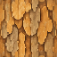 | 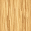 | 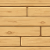 | |
| brown_birch | 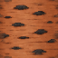 | 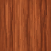 | 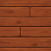 | |
| brown_oak | 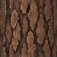 | 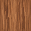 | 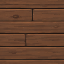 | |
| brown_zelkova | 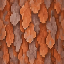 | 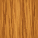 | 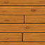 | |
| bulbis | 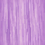 | 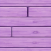 | ||
| cika | 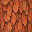 | 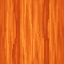 | 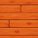 | |
| crimson_fungus | 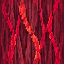 | 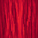 | 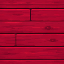 | |
| cypress | 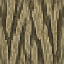 | 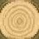 | 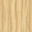 | 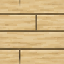 |
| death_cap | ||||
| deciduous | ||||
| ebony | ||||
| embur | ||||
| ether | ||||
| fir | ||||
| firecracker | ||||
| florus_rose | ||||
| florus_thorn | ||||
| forgotten | ||||
| fungal_imparius | ||||
| giant_allium | ||||
| giant_pink_allium | ||||
| giant_white_allium | ||||
| green_enchanted | ||||
| green_mushroom | ||||
| holly | ||||
| imparius | ||||
| indigo_jacaranda | ||||
| ironwood | ||||
| jacaranda | ||||
| joshua | ||||
| lament | ||||
| mahogany | ||||
| maple | ||||
| meadow | ||||
| nightshade | ||||
| oak | ||||
| orange_birch | ||||
| orange_oak | ||||
| orange_spruce | ||||
| orchard | ||||
| palm | ||||
| palo_verde | ||||
| pine | ||||
| pink_cherry | ||||
| prairie | ||||
| purple_bulbis | ||||
| rainbow_eucalyptus | ||||
| red_birch | ||||
| red_maple | ||||
| red_oak | ||||
| red_spruce | ||||
| redwood | ||||
| shulkren | ||||
| silver_maple | ||||
| skyris | ||||
| soul_shroom | ||||
| spirit | ||||
| spruce | ||||
| sythian | ||||
| wailing | ||||
| warped_coral | ||||
| warped_fungus | ||||
| weeping_milkcap | ||||
| white_cherry | ||||
| white_mangrove | ||||
| white_sakura | ||||
| willow | ||||
| witch_hazel | ||||
| withering_oak | ||||
| wood_blewit | ||||
| woodlands | ||||
| yellow_birch | ||||
| yellow_sakura | ||||
| yellow_spruce | ||||
| yucca | ||||
| zelkova |